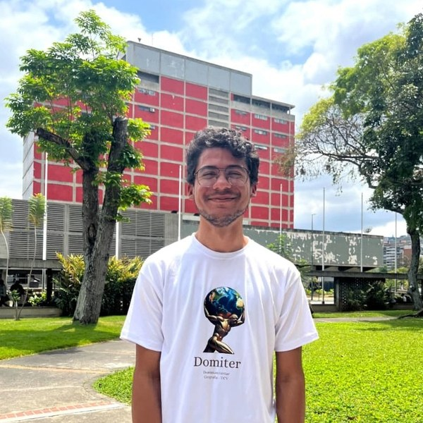
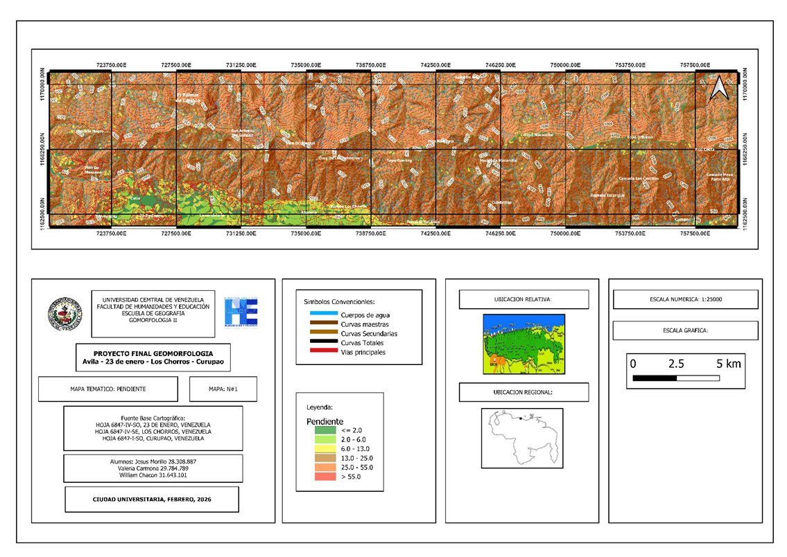
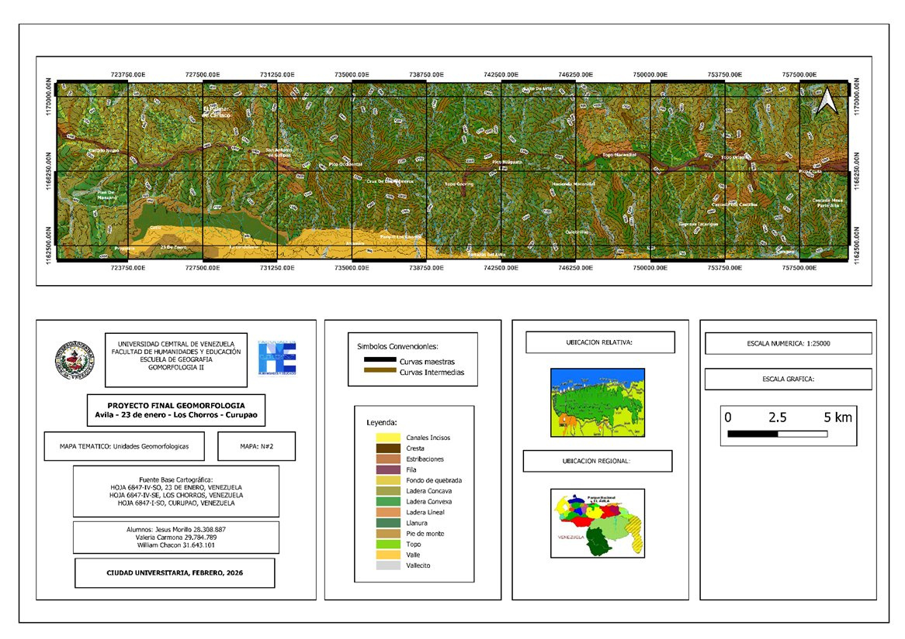
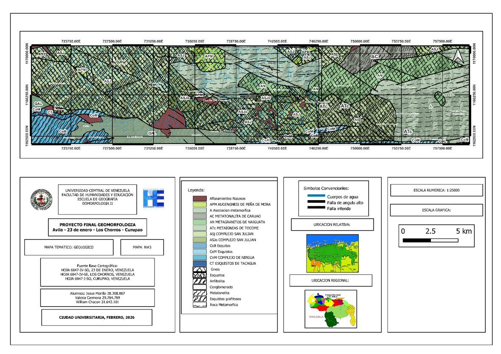
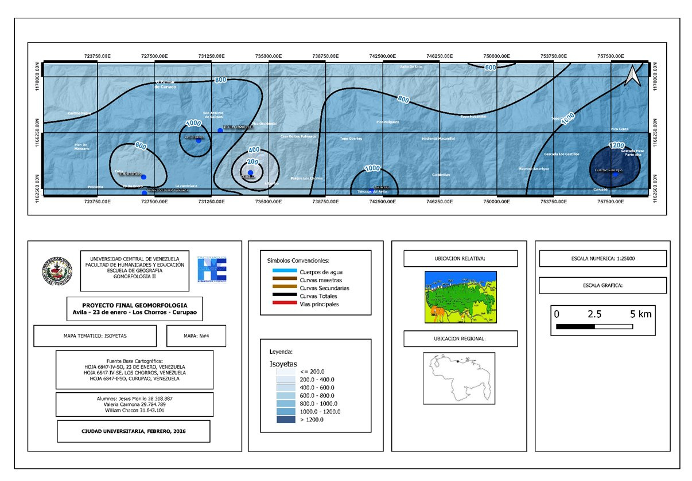
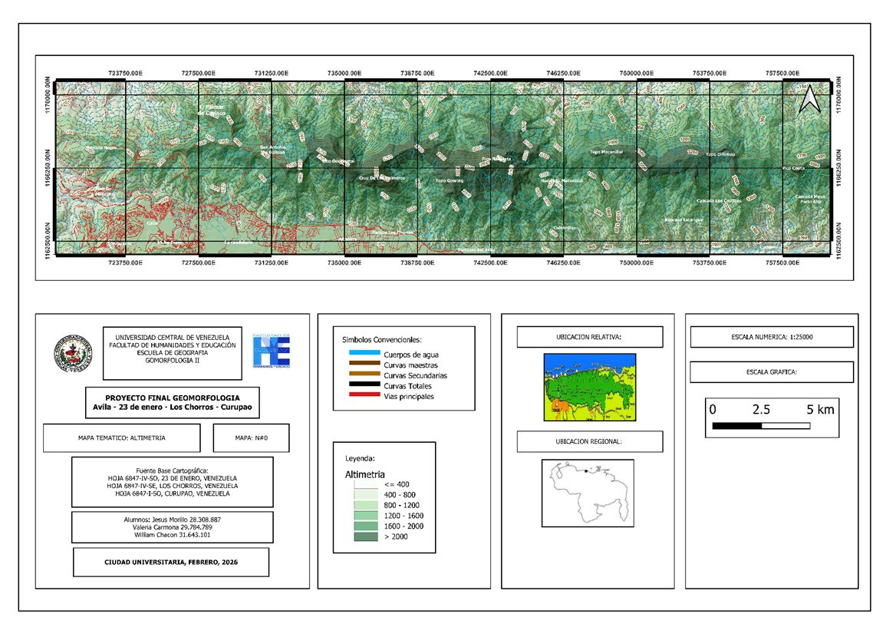
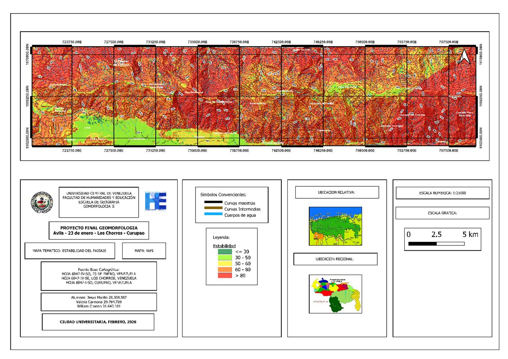

Perfil híbrido entre desarrollo de software y análisis geoespacial. Integro tecnología, datos y territorio con precisión cartográfica.
Hola, soy Jesús Morillo — programador con más de 7 años de experiencia y estudiante de Geografía en la Universidad Central de Venezuela.
Mi perfil es híbrido: combino el desarrollo de software con el análisis geoespacial. Tengo experiencia en plataformas web/móvil fullstack y en cartografía técnica con QGIS y ArcGIS. Orientado a resultados, con habilidad para integrar tecnología, datos y territorio.
Busco proyectos que amplíen mis habilidades y me permitan aportar valor real. Creo que la experiencia y los desafíos son el motor del crecimiento personal y profesional.
Formación en análisis geoespacial, cartografía, SIG y planificación territorial.
Formación técnica especializada en programación, hardware y sistemas.
Bachillerato en ciencias.
Producción de cartografía temática de alta precisión (geología, geomorfología, isoyetas) y modelos DEM para análisis de pendientes e identificación de zonas de riesgo.
Desarrollo end-to-end de plataforma híbrida Android/Web. Chat en tiempo real, backend con Supabase y protocolo KYC para validación de transacciones.
Diagnóstico, reparación y mantenimiento de equipos. Recuperación de datos y atención personalizada con cartera estable a lo largo de 5 años.






¿Tienes un proyecto en mente? ¿Necesitas cartografía, un sitio web o una app? Escríbeme — siempre estoy dispuesto a colaborar.
{kind=link}
{kind=link}
{kind=link}
{kind=link}
{kind=link}
{kind=link}